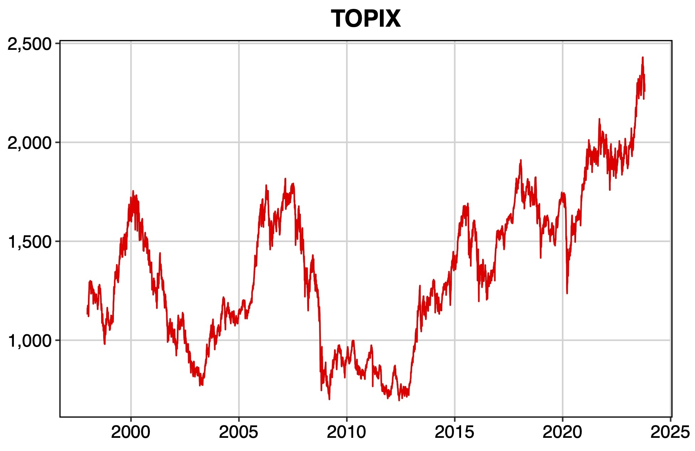
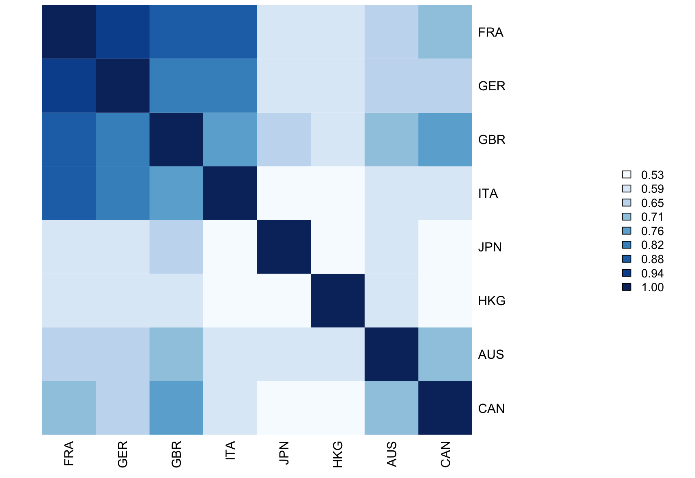
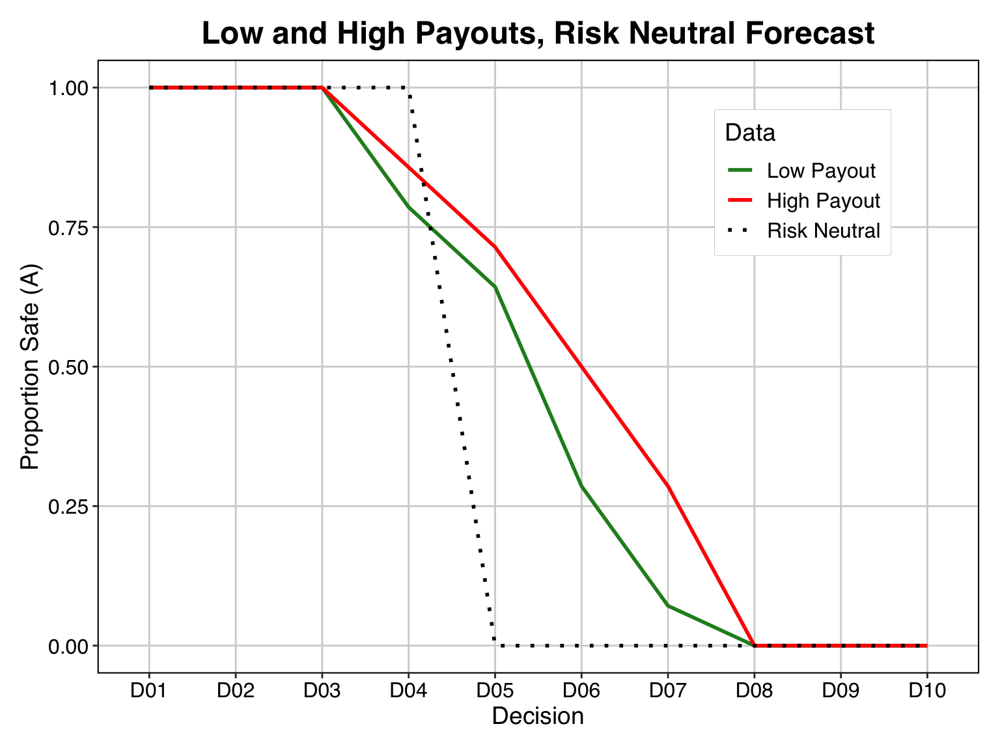
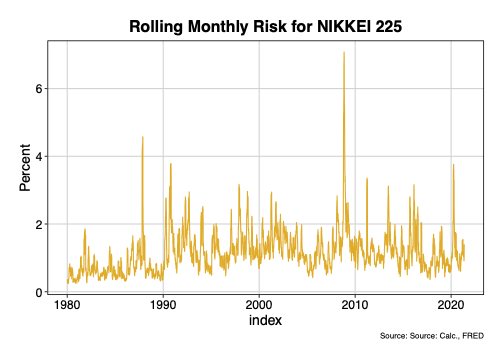
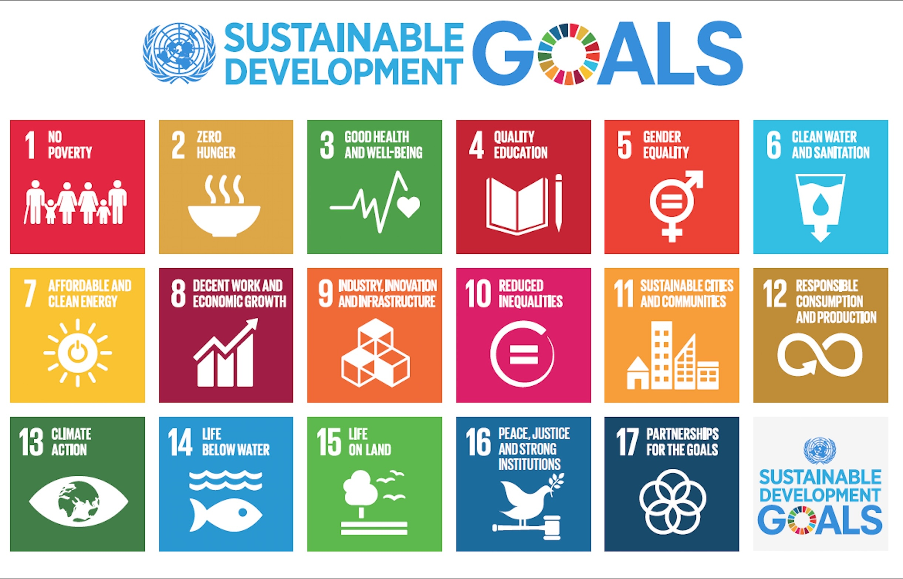
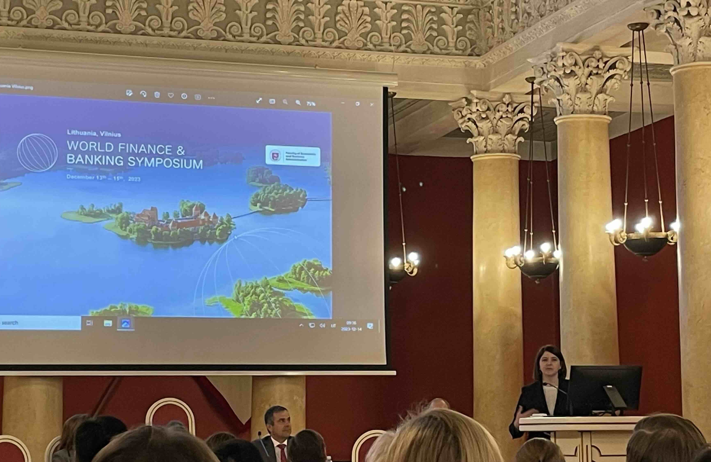
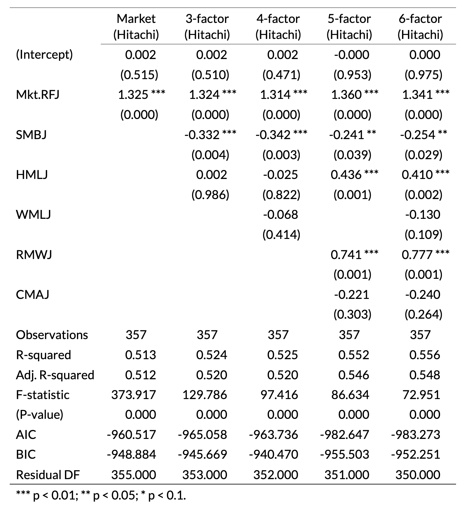
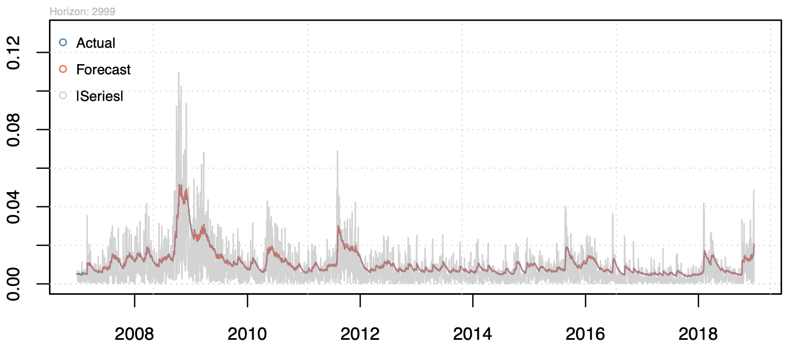
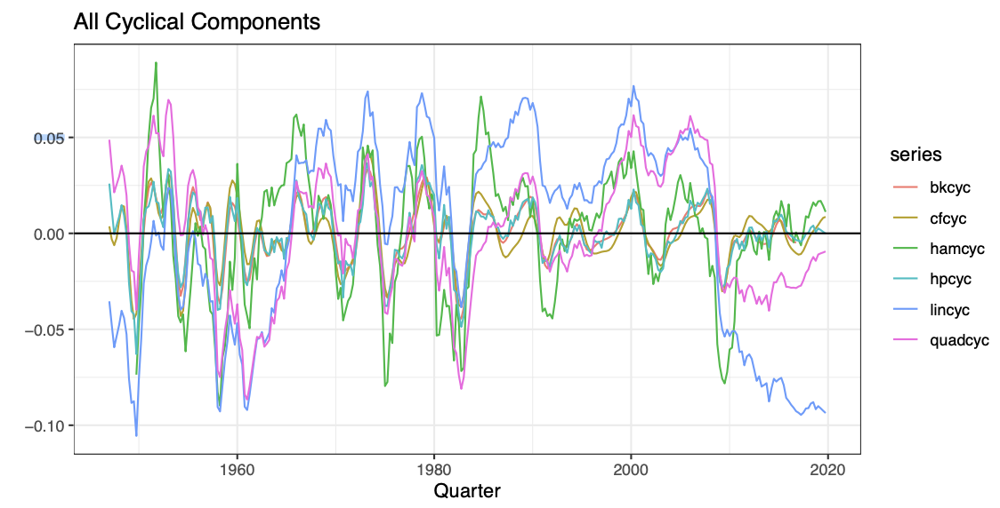
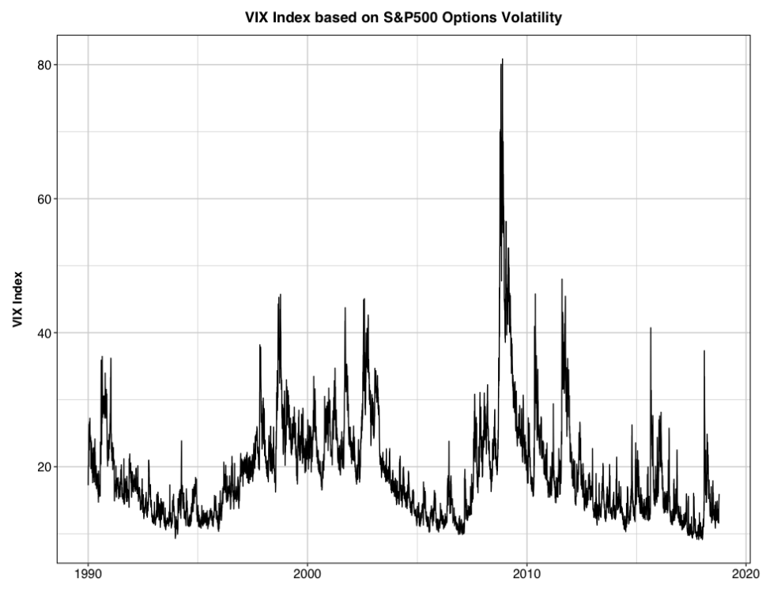

Current courses
| Course | Content | |
|---|---|---|
| Financial Theories & Applications | This is an introductory course in finance that focuses on financial markets and instruments. The course provides students with an understanding of the roles of financial markets, how financial securities are priced and traded, and their role in the global financial system. We cover the financial system, interest rate determinsation, money markets, bonds, stocks, futures and options. |  |
| Portfolio Management (Investment) | This course is about investment and portfollio theory from a practitioner’s perspective. We cover risk and return, diversification, Modern Portfolio Theory, the Black-Litterman Model, investment philosophy, portfolio design, risk management, performance evaluation, ethics and fiduciary duty. We use these concepts to construct portfolios and examine portfolio anayltics in R using securities data from Nikkei NEEDS. |  |
| Behavioural Finance | Researchers such as Daniel Kahneman, Amos Tversky, Robert Shiller and Richard Thaler pioneered the application of concepts from psychology to economic and financial decision-making. In behavioural economics and finance, we use principles from psychology to describe how individuals actually make economic and financial decisions, in contrast to the way rational agent models suggest individuals should make decisions. |  |
| Finance Data Workshop | This is an intensive workshop-style course that gives students hands-on experience in analysing and modelling financial data, and interpreting the results of analyses. Students will work with financial data from the Nikkei NEEDS database that is used by analysts in the finance industry. The course covers one topic in depth, such as factor analysis, panel regression or the Fama Macbeth model. |  |
| Crossing Borders Without Crossing Borders | This is an Intercultural Virtual Collaboration course. Students in Japan and the Netherlands work together in small teams on a business case project analysing the differences in marketing and communications related to the UN Sustainable Development Goals. The course aims to develop students intercultural competencies via learning by doing in a cross-border and cross-cultural context. |  |
| Undergraduate Seminar | Students write their undergraduate research paper under my guidance on a topic within the seminar theme ‘Empirical Analyses in Finance, Economics and Business.’ The course includes sessions on empirical research methods. Students learn the priniples of reproducible research while completing their project, using R, RStudio and Quarto. |  |
| Financial Econometrics | This course covers applied financial econometrics at the graduate level. Students will gain hands-on experience modelling real-world financial data using intermediate/advanced financial econometric methods. The course is primarily empirical and applied in nature. Financial and econometric theory will be included selectively to facilitate an understanding of empirical finance research. Students will work on empirical modelling during class using the programming language R and the RStudio… |  |
No matching items
Executive workshop
| Course | Content | |
|---|---|---|
| The Psychology of Economic Decision-making | This session will bring economics down to earth and get you thinking about how we think about our world. Mixing human psychology with a practical understanding of economic incentives and market behaviour, we will explore how understanding human miscalculations can help us make smarter decisions in both our private and professional lives. |
|
No matching items
Previous courses
| Course | Content | |
|---|---|---|
| Econometrics | This course exposes students to common econometric techniques that economists use to estimate, test, and forecast relationships between variables in economics and finance. We cover applied econometrics and selective intermediate theory. Students will apply theory to empirical problems using economic and financial data in class and in assignments using the statistical programming language R and the RStudio IDE. |  |
| Macroeconomics | This course introduces advanced macroeconomic modelling techniques and their application to the the analysis of business cycle fluctuations. We cover the approaches to macroeconomic modelling and analysis, analyse the interrelationships between macroeconomic variables using vector autoregression, and examine the standard theoretical macroeconomic models with an emphasis on business cycles, inflation, monetary and fiscal policy. |  |
| Economic & Financial Crises | We will examine the salient features of crises in both emerging and developed economies and cover Hyman Minsky’s financial instability model. The course touches on economic history, international macroeconomics, international finance, banking, financial markets, regulation, government finances, international relations and politics. Students will develop a deep understanding of economic and financial crises, their causes and consequences. |  |
| International Business | This is an introductory course in international business that examines the economic, management and commercial aspects of international businesses. We will take a global perspective, but also emphasise the perspective of Asian firms and doing business in Asia. Working through Asia-relevant case studies about international businesses is a key part of the course. |
|
| Financial Markets Workshop | This course will develop students’ skills in applying economic and financial theory to the real time analysis of macroeconomics, financial markets and investment strategy. The course is conducted in a workshop style. The class sessions be a combination of lectures given by me, student presentations and student led discussion. We will develop a strategy for interpreting and forecasting developments in financial markets and important economies, focussing on cycles and trends. |
|
| Economics Readings in English | This course develops non-native English speaking undergraduates’ ability and confidence in discussing and comprehending economics in English. The course focuses on discussing economics related topics, not teaching the English language. Students are required to read, present and discuss various economics topics in English. |
|
| Economic Development | This course covers the microfoundations of development. We examine theoretical and empirical issues applicable in less-developed economies. Topics surveyed include current issues, agriculture and rural development, education, human capital investment, employment and labour markets, population, poverty alleviation, health, credit and financial markets, dealing with risk, technological change, and project design and evaluation. |
|
| International Trade | This course surveys a number of major issues in trade theory and policy, as well as empirical tests of trade models, in the light of recent developments in international economics. Through this course, students should become familiar with the theoretical models of international trade, current issues in trade policy, and application of the theory to less developed country economies. |
|
No matching items